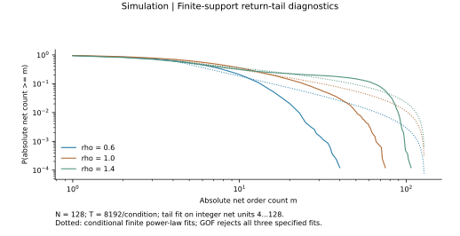
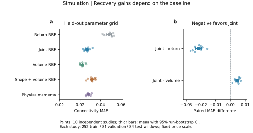
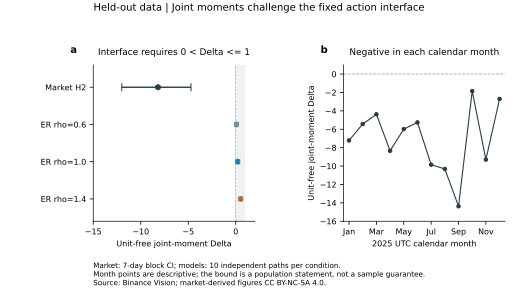
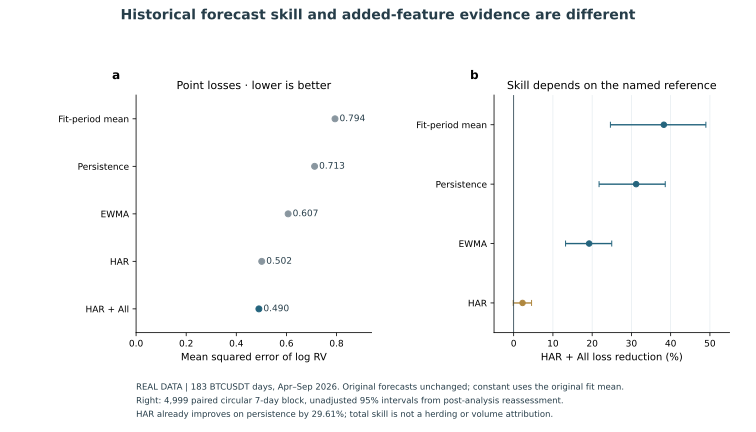
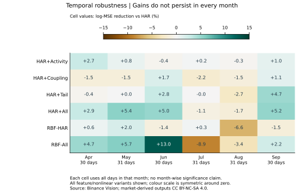
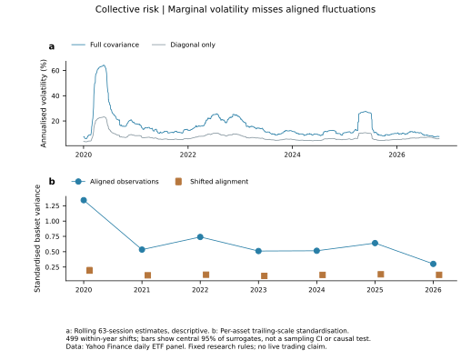
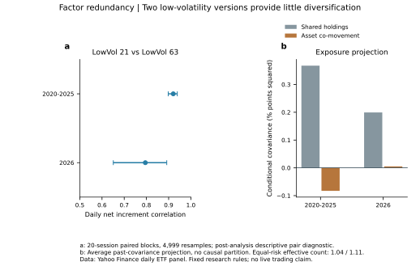

Findings and evidence发现与证据
The model, the inverse problem and the applications answer different parts of the research question.模型、逆问题与应用，分别回答研究问题中的不同部分。
Coordination changes the distribution of group sizes协调改变群体规模分布
A finite-size scan links local connections to a collective group structure.有限规模扫描将局部连接与整体群体结构联系起来。

Group-size theory and return tails are separate questions群体规模理论与收益尾部是不同问题
The mean-field critical cluster law has exponent 5/2. The project also fits the finite return distribution; a pure power law over its tested range is rejected.均场临界群体数密度的指数为5/2。项目另外拟合有限收益分布；所检验区间内的纯幂律被拒绝。
Inspect the finite-return tail test查看有限收益尾部检验

Conditional recovery coexists with structural ambiguity条件参数恢复与结构歧义并存

On the original grid, joint RBF reduces MAE by 44.49% relative to return-only RBF. The volume-only baseline performs better on that grid.原网格上，量价RBF相对仅收益RBF的MAE下降44.49%；该网格上的仅成交量基线表现更好。
At unseen connectivity values, moment inversion and joint RBF have MAE 0.027114 and 0.026882. The exact chain–star example shows why internal edges remain hidden.未见连接参数处，矩反演与量价RBF的MAE分别为0.027114和0.026882。精确的链与星反例说明内部连边为何仍然隐藏。
Market observations test the fixed interface市场观测检验固定接口
The fixed group-action interface requires a positive Δ. In BTCUSDT 2025 H2, the observed value is −8.181, with a seven-day-block approximate 95% interval [−11.998, −4.712]. This challenges the joint fixed-interface assumptions.固定群体动作接口要求Δ为正。BTCUSDT在2025年下半年的观测值为−8.181，七日块近似95%区间为[−11.998,−4.712]，对这组固定接口的联合前提提出挑战。

Browse every historical forecast date浏览每个历史预测日期
183 held-out dates, April–September 2026. Daily volatility is 100√RV (%).2026年4至9月，183个历史留出日期。日波动强度为100√RV（%）。

The full model reduces log-MSE by 31.20% relative to persistence. HAR alone reduces it by 29.61% against the same reference.完整模型相对昨日延续的log-MSE下降31.20%；HAR自身相对同一参照下降29.61%。
The additional reduction relative to HAR is 2.26%, with an approximate 95% interval [−0.11%, 4.56%]. The interval crosses zero.相对HAR的追加下降为2.26%，近似95%区间为[−0.11%,4.56%]，区间跨零。
Monthly performance and later controls月度表现与后续控制

HAR+All loses to HAR in July and August. Later external-asset and new-time controls also do not establish stable large additional gains.HAR+All在7月和8月弱于HAR；后续外部资产与新时间控制也未建立稳定的大幅追加增益。
Shared risk and repeated strategy variants共同风险与重复策略版本

For the same 63-session window ending 31 March 2020, the annualized volatility estimates are 57.73% and 20.62%. This is a historical covariance comparison.在截至2020年3月31日的同一63交易日窗口内，年化波动估计分别为57.73%和20.62%。这是历史样本协方差的对照。

Daily net P&L correlations are 0.921 in 2020–2025 and 0.795 in 2026. The exploratory six-to-five screen does not automatically lower turnover or later risk.每日净盈亏相关在2020至2025年为0.921，在2026年为0.795。探索性的六减五筛查没有自动降低换手或后续风险。
Explore the covariance comparison操作协方差对照Inspect the complete research record查看完整研究记录
The reports retain the theory, all 19 figures, eight tables and subsequent controls.报告保留理论、全部19幅图、8张表与后续控制。